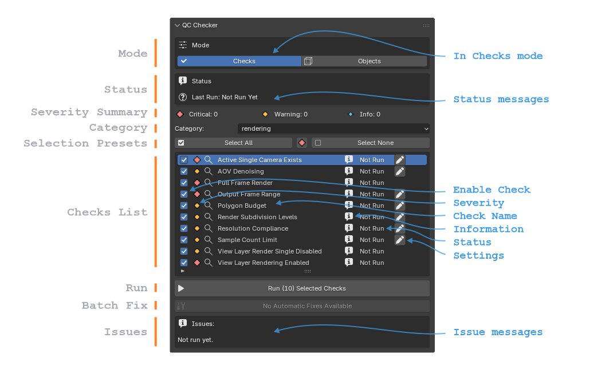
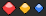
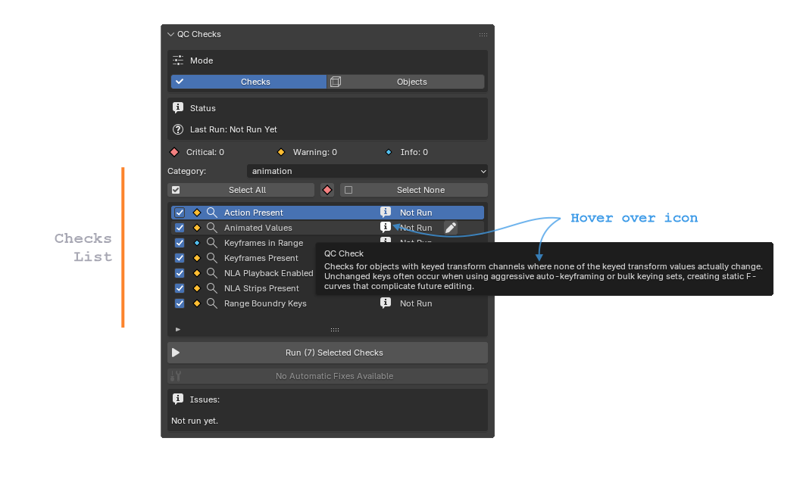
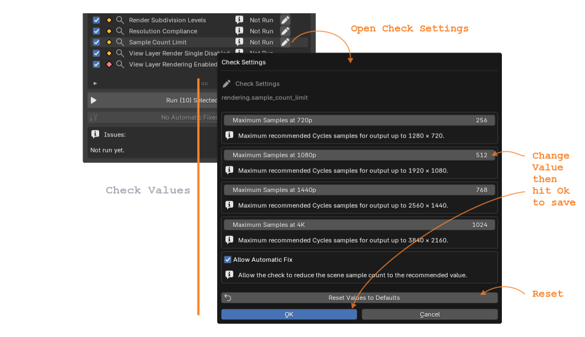
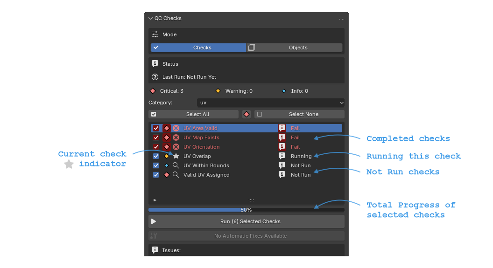
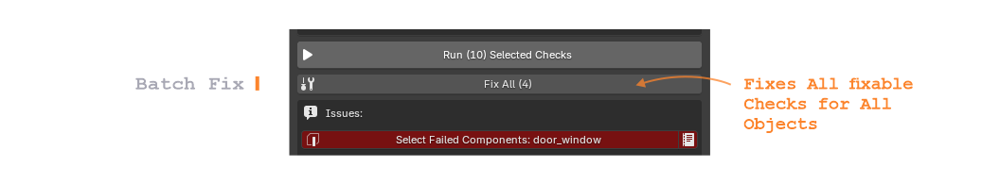
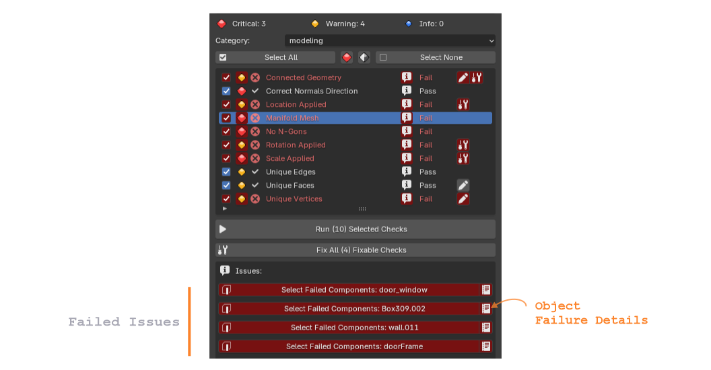
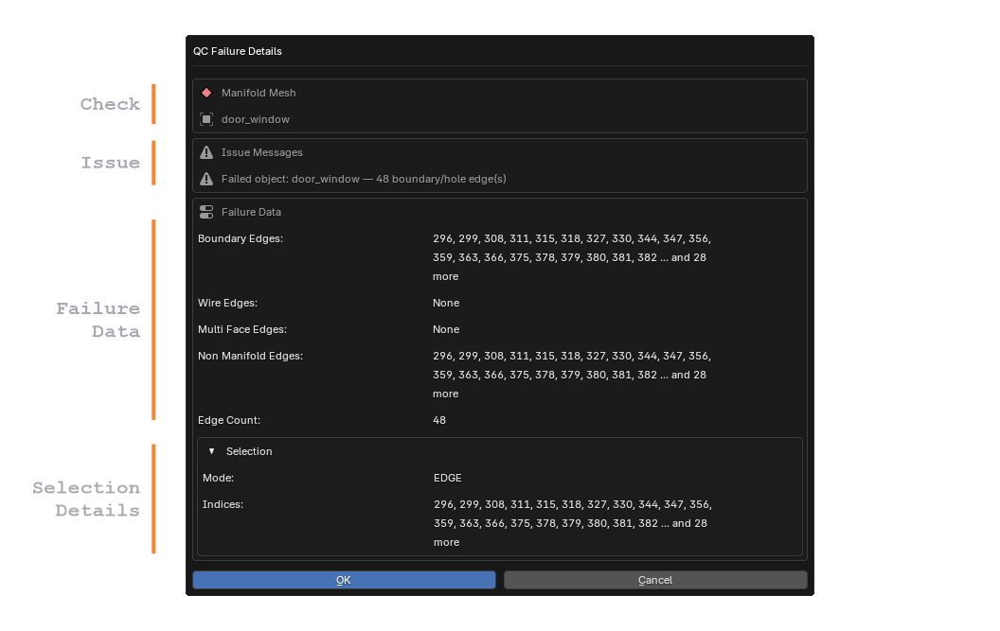
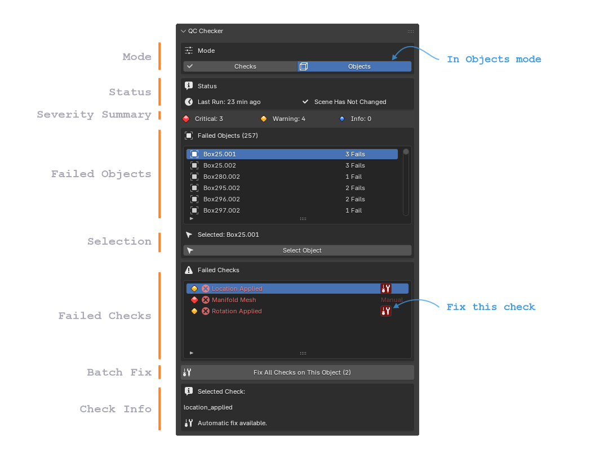

QC Checker Panel
Scriptronaut Blender panel.
In Checks Mode

Mode
The Mode buttons switch between the two primary views of the QC Checker.
Checks: Displays every QC check in the selected category,
allowing checks to be enabled, run, configured, and fixed. (see above)
Objects: Displays only objects that currently fail
one or more QC checks, making it easier to inspect and fix
problems object-by-object.
Status
The Status section summarizes the current state of the QC run.
Last Run : Shows when the selected category was last executed.
Scene Changed : Indicates whether the scene has been modified since
the last QC run. If changes are detected, it is recommended to
run the checks again before relying on previous results.
Severity Summary
The Severity Summary provides an overview of the current
results for the selected category.
Critical : Number of critical issues found. These
generally should be fixed before moving forward.
Warning : Number of recommended fixes that may
affect quality or consistency.
Info : Number of informational messages that do
not represent errors.
Category
The current Category of the checks.
Each Category has a number of checks.
There are 7 Categories included.
Selection Presets
Group of buttons to help selection of Checks to run.
Select All : Selects all checks.
: Selects Critical checks only.
: Inverts check selection.
Select None : Unselects all Checks.
Checks List
The Checks List displays every quality control check available
in the selected category. Each row represents one independent
validation that can be run against the current scene.
 Enable Check :
Enables or Disables the check to be Run.
Enable Check :
Enables or Disables the check to be Run.

Severity : Indicates the importance of the check.Critical issues should normally be fixed before continuing,
Warning highlights recommended fixes, and
Info provides useful information.
 Check Name :
Displays the friendly name of the QC check.
Selecting a row also displays its failed objects or issue
messages below after running the checks.
Check Name :
Displays the friendly name of the QC check.
Selecting a row also displays its failed objects or issue
messages below after running the checks. Information :
Tooltip describing what the check validates and why it
exists. This is useful when learning the QC system or
understanding an unfamiliar check.
Information :
Tooltip describing what the check validates and why it
exists. This is useful when learning the QC system or
understanding an unfamiliar check.
 Status :
Shows the current result of the check:
Not Run, Running, Pass, or Fail.
Results are updated each time the check is executed.
Status :
Shows the current result of the check:
Not Run, Running, Pass, or Fail.
Results are updated each time the check is executed.Settings : Opens the settings dialog for checks that support user-configurable options, allowing project-specific thresholds or behavior to be adjusted.

Fix : After running a Check, This button executes the automatic fix for the failed check when one is available. Some checks require manual correction and therefore does not display a Fix button.Run / Runnng
Click the Run button to Run the currently selected checks one after the other.

Batch Fix
Click the Fix All (#) button to Fix All fixable Checks for All Objects.

Issues
The Issues section lists the individual failures reported
by the currently selected QC check.
Depending on the type of check, this section may display:
- Failed Object
- Failed Vertices, Edges, or Faces
- Scene Settings
- Materials
- UV Information
- Detailed error messages
For geometry-related checks, the Select button automatically selects the affected object or mesh components directly in Blender, making it easy to locate and correct the issue.
After Checks Run

Failure Details
If any checks fail the objects that failed will be flagged. You can click on the
icon to see the Failure Details.

In Objects Mode

Mode
The Mode buttons switch between the two primary views of the QC Checker.
Checks: Displays every QC check in the selected category,
allowing checks to be enabled, run, configured, and fixed.
Objects: Displays only objects that currently fail
one or more QC checks, making it easier to inspect and fix
problems object-by-object.
Status
Severity Summary
Failed Objects
List of Objects that have failed with the Number of Failed Checks it has.
Selection
Selects the Failed element in the Scene.
Failed Checks
List of failed Checks for the selected failed Object list.
If available click on the
to Fix only that specific Check on the Object.
Batch Fix
Fixes all failed Checks on the Currently selected Object.
Check Info
Information about what Check is currently Selected in the Failed Checks list.